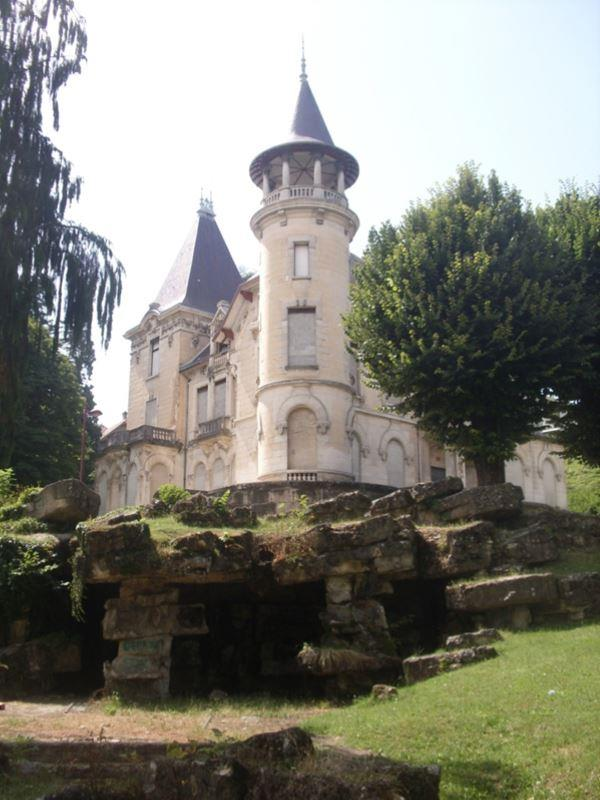
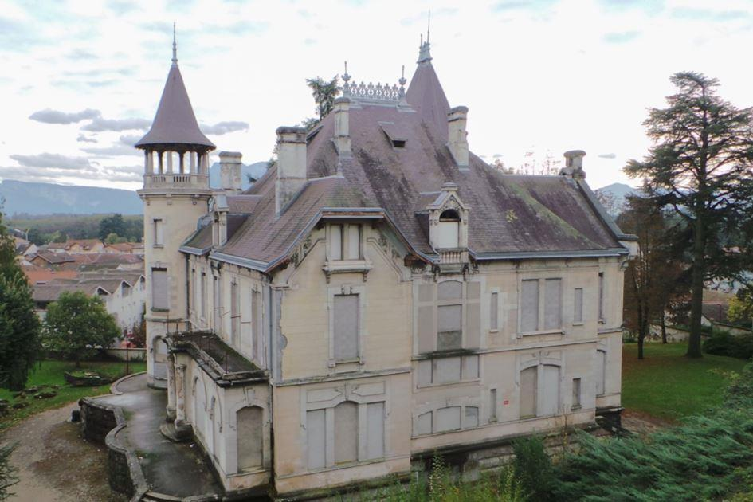
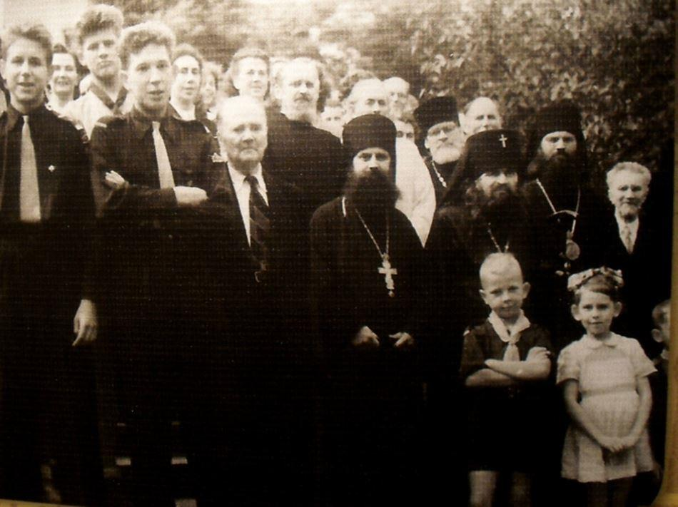
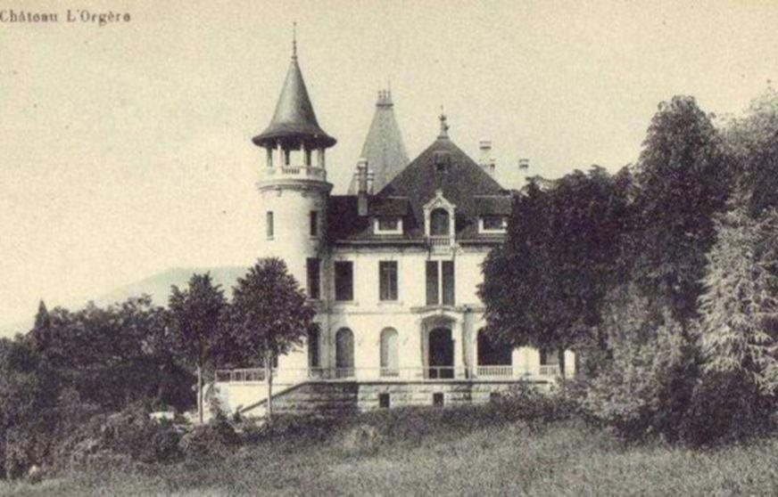
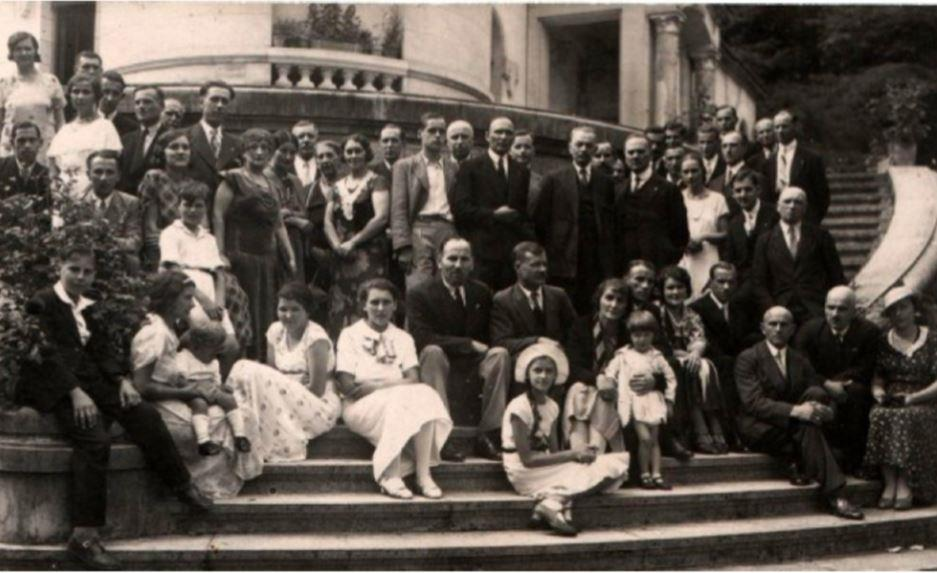
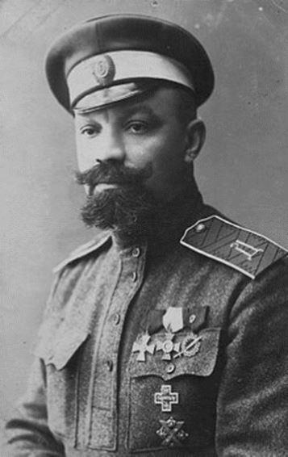
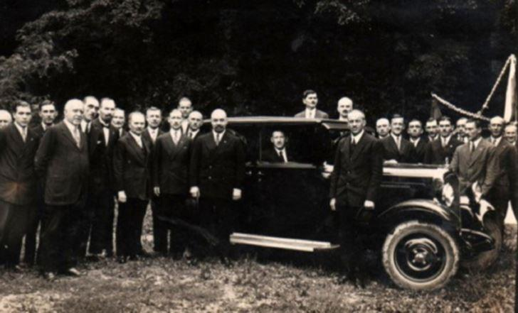
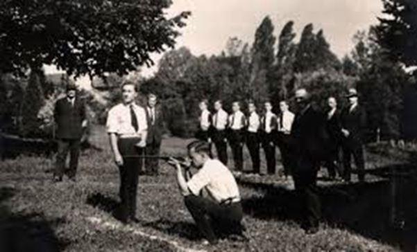
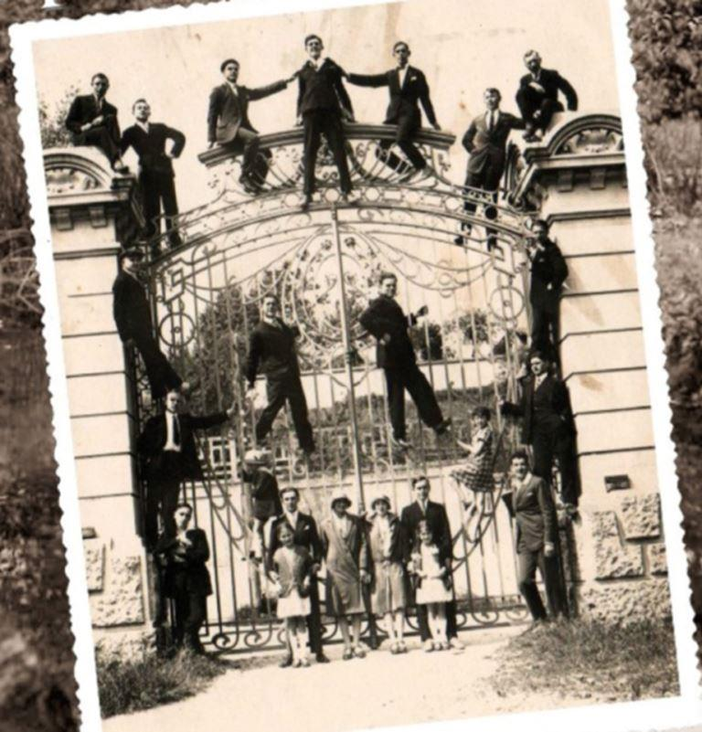
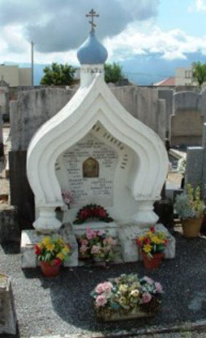

Parmi les lieux où, après la révolution de 1917, s’est perpétuée jusqu’au bout la mémoire de la Mère-Patrie qu’il avait fallu quitter, le château de l’Orgère, à Rives en Isère, a joué un rôle éminent en abritant de nombreux émigrés russes, pendant deux générations. André Moussine-Pouchkine, né lui-même à Rives où ses parents vécurent une bonne partie de leurs années d’exil, a tenu à sauver cette époque de l’oubli. Aujourd’hui il raconte.
1 – RAPPEL HISTORIQUE
Rives se situe en Isère, à 70 km de Lyon et à 25 km de Grenoble, capitale des Alpes françaises, au cœur du Dauphiné et de son patrimoine unique.
Le château de l’Orgère a été construit en 1912-14 au centre de la ville, dans le style classique, un peu pompeux, de la fin du 19ème siècle, par un marchand de charbon récemment enrichi – Joseph Monin.
À la fin de la guerre, en 1918, le marchand de charbon, ruiné, céda le château pour une « bouchée de pain » à des industriels locaux, propriétaires de plusieurs usines de papier – Edouard Blanchet et Robert Kléber.

2 – LES PREMIERS PAS : LES OUVRIERS RUSSES À RIVES
Dès 1919, fuyant la Révolution russe, quelques ouvriers russes émigrés travaillent à Rives à l’usine de papier, mais ils étaient peu nombreux (10-15 célibataires) et vivaient près de l’usine. Avec l’arrivée en 1924 de la famille Melnick-Botkine la situation changea. Constantin Melnick et son épouse, Tatiana Botkine (fille du médecin personnel de la famille Impériale, et qui fut assassiné avec elle) ont su convaincre les industriels français locaux de l’intérêt à utiliser la main-d’œuvre militaire russe, travailleuse, sûre et disciplinée.
Avec l’aide de l’Union des Combattants Russes (ROVS) et du général Koutiepov, ils firent venir divers groupes militaires russes, principalement de Bulgarie, parmi d’autres personnes, venues individuellement.
Ces groupes furent logés au château en 1925 et se répartirent de la façon suivante. Le rez-de-chaussée, surélevé et donnant sur une terrasse, fut utilisé pour les locaux communs (la cantine avec sa cuisine, la bibliothèque, les ateliers, les réceptions et les salles de réunion), le premier étage fut destiné aux appartements pour les familles avec enfants, et le deuxième étage fut réservé aux familles sans enfants, aux célibataires et aux personnes seules.
Le premier groupe militaire, du régiment des Hussards de Biélorussie, arriva de Serbie en 1925, avec à sa tête le colonel Mantourov. Ce groupe comprenait environ une vingtaine d’officiers.
Le deuxième groupe, de l’École d’Officiers d’Artillerie, arriva de Bulgarie en 1926 avec à sa tête le colonel Gonorsky, également une vingtaine d’officiers mais avec leurs familles.
Le troisième groupe fut constitué en 1926 de cosaques du Kouban, de l’École Alexis du Kouban du général Lebedev, en provenance de Bulgarie avec le colonel Zrodlovsky.
Enfin quelques groupes d’étudiants russes de l’Université de Schoumen en Bulgarie arrivèrent dans les années 1927 et 1928.
En tout, la population des Russes à Rives, travaillant à l’usine de papier, s’élevait en 1927 à quelques 150 ouvriers russes et à environ 200 personnes si l’on compte les femmes et les enfants. Mais tous ne vivaient pas, bien sûr, au château.
3 – L’ÉGLISE ET LA PAROISSE ST MICHEL
La chapelle fut installée en 1925 sous la terrasse, en sous-sol et fut consacrée à St Michel l’archange. Elle fut agencée (iconostase) et décorée (fresques) par les Russes eux-mêmes avec leurs propres moyens et quelques icones ramenées par les cosaques de Kouban. Très vite après son arrivée de Bulgarie, Boris Gonorsky reprit la responsabilité de cette paroisse et en devint le staroste (marguillier) et le chef de chœur à vie. Constantin Sentzoff le seconda pour ce qui concerne le chœur et organisa les répétitions.
Un prêtre permanent, vivant au château et travaillant à l’usine, assura les offices jusqu’à la deuxième guerre mondiale, mais ensuite un prêtre de Lyon desservait la paroisse une fois par mois et pour les grandes fêtes. Des membres éminents de l’Église Orthodoxe Russe Hors Frontières se sont succédé à la tête de cette paroisse :
archimandrite Ioasaf (Skorodumov Ioan V .) (1925-1926), par la suite évêque du Canada et archevêque d’Argentine
archiprêtre Andrei Michine (1926-1927), par la suite recteur de la paroisse de Lyon
archiprêtre Wladimir Poliakov (1928-1929), par la suite recteur de la paroisse de San Remo
hiéromoine Guerassime (Novikov) (1929-1934)
archimandrite Serge (Pfefferman) (1936-1939), par la suite recteur de l’église de Meudon
archiprêtre Andrei Michine (1940-1943) à nouveau, également recteur de la paroisse de Lyon
archimandrite Antony (Bartochevitch Andrei) (1950-1953), par la suite archevêque de Genève et d’Europe Occidentale, premier suppléant du Synode des Évêques de New York
archiprêtre Serge puis archimandrite Seraphin (Kondratiev Serge) (1953-1968)
La paroisse orthodoxe de Rives était connue pour sa fermeté lors de la période difficile du schisme provoqué par le métropolite Euloge en 1931 et fut le rempart de l’Église Orthodoxe russe Hors frontière lors de l’installation de son évêché d’Europe Occidentale après le schisme. À la fin de la guerre, les 28 et 29 Novembre 1949 la paroisse fut le lieu de rassemblement de tout le clergé de l’évêché pour la réunion épiscopale appelée par l’archevêque Nathanel.
La paroisse orthodoxe de Rives était le passage obligé en France de tous les hiérarques de l’Église Orthodoxe Russe Hors Frontières, en particulier, avant le schisme, le métropolite Euloge (Gueorguievsky), puis après le schisme les métropolites Anastase (Gribanovsky) et Philarète (Voznessensky), premiers hiérarques de l’Église Hors Frontières.
Les archevêques Nathanael (Lvov), Leonce (Bartochevitch), Jean (Maximovitch) , canonisé par la suite sous le nom de St Jean de Shanghai, et bien sûr l’archevêque Antony (Bartochevitch), qui fut archimandrite dans la paroisse, furent des visiteurs fréquents.
Après la guerre, quand beaucoup de Russes se sont dispersés et que ne sont restées à Rives que quelques familles russes, la paroisse continua à attirer des paroissiens de toute la région et au-delà, en particulier de Briançon (Navarre), de Lyon (Proskourov, Kouznetsov) et de Paris (Solovieff, Repnine) jusqu’en 1969, date du décès de Boris Gonorsky.
La chapelle fut fermée dans les années 1970 par l’archevêque Antony, et avec sa bénédiction, l’agencement, les icônes et les ornements de la chapelle furent transférés dans une nouvelle paroisse à Montpellier.

« Au pied du château était installé l’église orthodoxe, Jean Maximovitch qui une fois canonisé est devenu Saint Jean de Shanghai, que vous voyez sur cette photo, y officiait. »
4 – LA VIE AU CHÂTEAU
La vie russe battait son plein au château et autour, bien que les relations avec la population locale, au demeurant excellentes, étaient limitées. Le fait que le château soit entouré d’un grand parc fermé permettait aux Russes de se sentir chez eux. Dès qu’ils revenaient du travail, ils se changeaient, au propre et au figuré, et redevenaient des citoyens russes, se trouvant provisoirement hors de Russie.
Le premier étage avait vocation commune, y étaient installées des salles de réunion et des lieux de contacts (bibliothèque, salle de spectacles, cantine avec sa cuisine, salles de réunion…).
On y donnait des pièces de théâtre, des concerts, on y organisait des fêtes, des spectacles, des mariages aussi, des bals, des conférences, des cours et des séminaires et des rencontres avec les autres colonies russes des environs (Rioupéroux, Grenoble, Lyon). Ainsi de nombreux visiteurs de Paris ou d’autres centres de l’Émigration Russe, ont donné des conférences sur des sujets variés, des organisations militaires, politiques ou de jeunesse ont organisé des séminaires au château. Les généraux Koutiepov, Miller et Chatilov sont venus parler de l’Union des Combattants Russes, de la nécessité de combattre le communisme, les dirigeants politiques Poremsky (NTS), Kazem Bek (Mladorossy) ont cherché à convaincre les habitants du château de rejoindre leurs rangs, des écrivains et poètes sont venus parler de littérature, Bounine (prix Nobel 1933), Merejkovsky, Chmelev et Zaitsev, le compositeur Stravinsky, en voisin (Voreppe) fréquentait la paroisse. La ballerine Matiushkina de Gerke monta un ballet…
Mais il ne reste personne pour se souvenir de ces jours glorieux et les archives ont disparu. Il nous reste un espoir, celui de retrouver le journal personnel de Constantin Melnick.
Le premier étage fut utilisé pour des appartements destinés aux familles avec enfants (Melnick, Gonorsky, Gorodetzkoff…) et le deuxième étage pour quelques appartements plus petits, appartements communaux et dortoirs. Bien sûr on se recevait, on jouait aux cartes, on lisait les journaux et les derniers livres de la bibliothèque, et il était convenu que chaque famille constituée, prenne en charge un ou plusieurs célibataires.
Comme il est indiqué plus haut, une chapelle avait été installée au sous-sol et la paroisse de Rives était connue mondialement de toute l’Église Hors Frontières.
Le parc autour du château était vaste, planté d’arbres remarquables, conçu de façon recherchée et surtout entouré de murs. De grandes grottes artificielles au pied du château d’où sortait l’eau alimentant deux bassins, maintenant disparus, dont le dernier possédait une île, l’île d’Amour, des rochers flanquaient la partie nord ainsi qu’une tonnelle. Tous les rochers, les grottes, les ponts, les bancs, les barrières etc. étaient artificiels, en béton armé, ce qui était la mode à la fin du 19ème siècle. De grands arbres, des allées ombragées où se promenaient et flirtaient les étudiants de Schoumen, des prairies ouvertes, des tonnelles romantiques et une très belle vue sur les montagnes toutes proches – conditions des plus favorables pour ces émigrés déracinés et assujettis à des travaux postés, difficiles et indignes de leurs conditions sociales précédentes.
Un autre moyen de s’échapper de la routine quotidienne était de parcourir la campagne, à pied autour de la ville, à vélo jusqu’au lac de Paladru ou dans les Préalpes toutes proches, en bus jusqu’en Italie ou sur la Côte d’Azur.

Groupe de russes sur les marches de l'escalier du château de Rives, un dimanche après la liturgie
Il ne faut cependant pas croire que leur vie était facile. Le travail posté, des conditions de travail difficiles, des salaires misérables, souvent sans nouvelles de leurs parents, familles, sans espoir, sans avenir, dans un pays étranger, quelquefois hostile, beaucoup sont repartis pour une vie meilleure, certains se sont donné la mort. L’espoir de retourner en Russie, encore vivace jusqu’à la 2ème guerre mondiale, les a quittés définitivement après et très peu ont pu réaliser ce rêve.
5 – LES COURS MILITAIRES ET LA PRÉPARATION DE JEUNES OFFICIERS
Voilà ce qu’écrivait un ex-junker ayant terminé ces cours, récemment décédé en Australie, Romil Joukov.
« Dès les années 30 il y avait à Rives jusqu’à 200 Russes. Les conditions de vie au château ont permis aux habitants, ainsi qu’à ceux des environs de créer une « famille » très unie de gens qui n’ont pas oublié leur passé militaire et qui considèrent que leur présence en France, en émigration, est un phénomène provisoire, une étape obligée, après laquelle la lutte contre le mal mondial – le communisme, reprendra. Parmi les habitants du château, il se trouvait des militaires de l’ancien temps, de l’armée Impériale. Sous leur influence, la routine quotidienne s’égayait par l’organisation de différents évènements, conférences et exposés par des spécialistes des questions militaires et politiques. Bientôt, sous la direction d’officiers compétents, des cours militaires de formation d’officiers furent organisés. Les conditions de vie au château permirent, outre les cours théoriques, de mettre en place des exercices pratiques, sous le couvert d’une association sportive. Exercices militaires en formation, gymnastique, équitation, tir, escrime, relevés topographiques et d’artillerie etc…
Le général Koutiepov nous rendit visite à la fin de l’année 1929, à la veille de son kidnapping par les communistes le 26 Janvier 1930. Un banquet fut organisé en son honneur, banquet pendant lequel, avec ses mots, il s’adressa aux officiers et aux jeunes étudiants de la colonie. Son discours eut un impact tel que dès son départ les cours militaires furent organisés. Je peux à peine me souvenir des paroles exactes par Koutiepov mais son appel aux jeunes, sa foi en la possibilité de continuer la lutte contre le régime communiste, je m’en souviens encore maintenant ! »
Avec l’autorisation du général Chatilov et l’accord du général Golovine, chef d’État-major de l’Union des Combattants Russes, des cours militaires furent mis en place avec les jeunes et ainsi démarrèrent les Cours de Formation d’Officiers à Rives. Le colonel Gonorsky, président de l’Union des Anciens de Gallipoli, prit la direction de ces cours, aidé du colonel Gavrilov et du capitaine Joukov. Les cours débutèrent le 5 Avril 1929 et se poursuivirent jusqu’au 12 Juin 1932. »

Visite du général Koutiepoff à Rives (le premier à gauche de la voiture). « Nous sommes enfants de la Grande Russie, enfants des grands malheurs », écrivait dans ses vers Sofia Moldavanova ayant vécu à Rives.
La composition des Enseignants était la suivante :
Sotnik Moldovanoff Gymnastique, Maniement du sabre à cheval
La composition initiale des junkers était la suivante :
Wladimir Reoutsky
К.*
V.*
Boris Sardarov
Youri Novikov
Romil Joukov
Pavel Platonov
Youri Poliakov
pr. Gueorgui Stcherbatov
cte Andrei Moussine-Pouchkine
Viatcheslav Bourliouk
Alexandre Troubnikov
Gueorgui Kisselev
NN Zavitas
* jeunes envoyés au repos par le général Koutiepov après des missions en Union Soviétique

Entraînement militaire dans le parc du château
La première promotion d’officiers le 12 Juin 1932 était la suivante, par ordre de mérite :
starchy portoupei junker comte Moussine-Pouchkine Andrei, admis comme cornette au 17ème régiment de Sa Majesté l’Empereur des Dragons de Nijegorod
portoupei junker Joukov Romil, admis à l’École d’Officiers d’Artillerie Serge
portoupei junker Platonov Pavel, mis à la disposition des Cours militaires à Rives
portoupei junker Troubnikov Alexandre, admis au 12ème régiment de la Gde Duchesse Olga des Hussards Akhtyrskyском
portoupei junker Poliakov Youri
portoupei junker Tchirilin-Kisselev Gueorgui , admis au 7ème régiment de Sa Majesté l’Empereur Alexandre Ier des Hussards de Biélorussie
Au début des années 30 le travail dans les usines de papier se réduisit de façon brutale et nombreux furent les ouvriers russes mis au chômage et obligés de quitter Rives. Il n’y avait plus de possibilité d’obtenir du travail pour les jeunes et ainsi se terminèrent les cours d’officiers, page des plus brillantes de la vie des Russes à Rives.

Grilles de l'entrée du château de Rives
6 – LA DEUXIÈME GUERRE MONDIALE ET LE DÉMANTÈLEMENT PROGRESSIF DE LA COLONIE RUSSE
Quand débuta la deuxième guerre mondiale, les usines de papier locales se mirent à travailler pour l’industrie militaire – filtres pour les masques à gaz et autres. Les ouvriers russes, encore à Rives à cette époque, furent maintenus sur place dans le cadre de la défense passive. Mais bientôt la guerre active prit fin et les jeunes furent enrôlés dans le cadre du STO (Service obligatoire du Travail) et partirent travailler en Allemagne. Ainsi peu restèrent sur place. Le colonel Gonorsky eut la douleur de perdre son fils Andrei, mort pour la France dans les premiers mois de la guerre près de Bouvancourt (Ardennes).
7 – MONUMENT FUNÉRAIRE ET REGROUPEMENT DES TOMBES RUSSES AU CIMETIÈRE DE RIVES
Les tombes russes, dispersées dans le cimetière de Rives, arrivaient en fin de concession trentenaire dans les années 60 et il était urgent de regrouper ces tombes afin d’éviter leur reprise par la mairie. La paroisse prit la décision d’acheter une concession commune et de regrouper toutes les tombes. Il fut également décidé de faire construire un monument funéraire au-dessus de ces tombes.
 Monument Orthodoxe dans le cimetière de Rives, tombe de Nicolas Ivanoffyudine de 1927Un couple de paroissiens de Briançon, Pierre Navarre et Hélène, née princesse Golitsyne, tous deux architectes, proposèrent gracieusement les plans et les dessins d’un monument funéraire sous forme d’un oratoire russe. Le financement des travaux a été le fait des paroissiens eux-mêmes dans un élan et une abnégation remarquable. Chacun trouva les ressources nécessaires, qui en vendant des cartes postales russes sous verre, qui en reliant des livres, qui se priva pendant de longues années. Le monument funéraire fut consacré par l’archevêque Antony en 1962. Ce fut-là la dernière initiative d’envergure de cette colonie. Beaucoup disparurent alors, en particulier le colonel Gonortsky, certains quittèrent la région, et ne restèrent à Rives que quelques individus isolés et ainsi la colonie russe de Rives s’assoupit.
Le monument fut maintenu en état pendant quelques années, puis commença à se dégrader (tous les Russes valides ayant déjà quitté Rives). Il fallait aussi renouveler la concession. La municipalité de Rives prit alors la décision de prendre en charge la restauration du monument et son entretien. La mémoire des Russes de Rives continue ainsi à être honorée.
A. M.-P.
* A l’initiative d’André Moussine-Pouchkine, une exposition photographique retraçant la vie des Russes de Rives (1924-1974) et leur château de l’Orgère, dit « Château des Russes » a été présentée à Moscou du 30 Octobre au 22 Novembre 2013 à la Maison Soljenitsyne des Russes de l’Étranger, puis à Paris du 26 au 30 Novembre au Centre Russe de la Science et de la Culture, et enfin à Rives du 3 au 8 Décembre à l’Hôtel de Ville de Rives (Isère). Cette exposition bilingue russo-française a été préparée par la Maison des Russes de l’Étranger sur la base de photographies d’époque.
Partager cette page